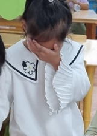

유아기는 부모와 애착형성과 또래관계의 기초를 형성하는 시기입니다. 이 시기에 우울증상과 치료 방법을 이해하는 것은 매우 중요합니다. 유아는 아직 완전히 발달하지 않은 인지적 및 정서적 능력이 내재되어 있기 때문에 성인과 다른 증상과 치료 접근이 필요합니다.
유아기 우울증상
- 정서적 불안정성: 유아들은 스트레스나 불안정한 환경에 민감하게 반응할 수 있습니다.
- 위축감과 발달 지연: 심리적 충격, 특히 부모와의 분리 등으로 인해 위축감이나 발달 지연이 나타날 수 있습니다.
- 식욕 및 수면 문제: 식욕 부진이나 수면 문제(과다수면 또는 불면)가 발생할 수 있습니다.
- 사회적 상호작용 부족: 아이들과의 상호작용이 줄어들거나 사회적 활동에 참여하는 데 어려움을 겪을 수 있습니다.
- 행동 변화: 평소와 다른 행동이나 예민함, 과도한 화를 내는 등의 변화가 나타날 수 있습니다.

반응형
치료 방법
- 안정적인 환경 조성: 안정적이고 예측 가능한 환경을 제공하는 것이 중요합니다. 일관된 일과와 규칙을 설정하고, 안정감을 주는 활동을 장려합니다.
- 놀이치료: 놀이치료는 유아기 우울증상에 매우 효과적인 치료 방법입니다. 아이들은 놀이를 통해 감정을 표현하고, 스트레스를 해소할 수 있습니다.
- 부모-자녀 상호작용 강화: 부모와의 긍정적인 상호작용은 아이의 정서적 안정에 중요합니다. 부모교육 프로그램을 통해 부모가 아동의 감정을 이해하고 적절히 대응하는 방법을 배울 수 있습니다.
- 정서적 지원: 유아가 자신의 감정을 이해하고 표현할 수 있도록 지원합니다. 긍정적인 강화와 격려를 통해 자존감을 높여줄 수 있습니다.
- 전문적인 평가 및 치료: 심각한 우울증상이나 발달 문제가 의심될 경우, 전문적인 평가와 필요에 따른 치료를 받는 것이 중요합니다. 이는 소아정신과 전문의나 심리학자의 도움을 받을 수 있습니다.
유아기 우울증은 초기에 적절히 개입하고 치료할 경우, 긍정적인 결과를 기대할 수 있습니다. 부모와 보호자의 관심과 지원이 이러한 치료 과정에서 핵심적인 역할을 합니다.